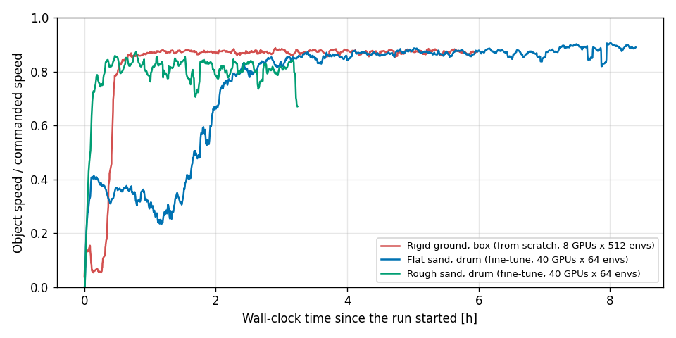
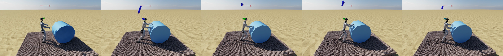
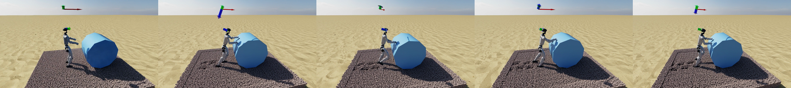
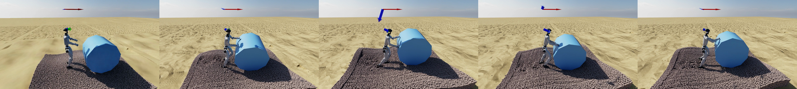
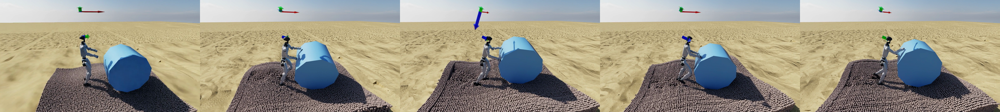

Slides built 2026-11-16. Record: outputs/T2.md. Every result here is unchecked: nothing has been through checks/T2.md.
What exists today is the humanoid loco-manipulation part: a G1 policy that pushes a rolling drum on MPM sand, on flat and on rough ground. The manipulator and velocity-tracking criteria have no result in this task yet.
Use the arrow keys or scroll to move between slides.
No result. The owner put this part on hold on 2026-11-15: a working Franka policy exists with Max, who is to take it
over. This task ran nothing for the manipulator. In the IsaacLab checkout only the UR10 task
IsaacContrib-UR10-Particle-Push exists, with no training run found.
No evaluation has been run by this task: no success rate, velocity error, or yaw error over a stated number of episodes. Trained runs exist in W&B (listed in outputs/T2.md, section 5), but they were not evaluated here and the reference policy has not been named.
One policy per terrain, each played in a single environment for one 12 s episode, with a straight command and with a
turn added. The numbers under each clip are from that one episode (examples/RSS/push/eval_drum_push.py, seed 42,
no observation noise), not from the recorded clip itself, and are not an evaluation over many episodes.
| Drum speed ratio | Drum travel | Yaw rate | Wrist contact | Episode |
|---|---|---|---|---|
| 0.92 | 4.36 m | 0.00 rad/s | 0.74 | reached the 12 s limit |
flat sand; command 0.35 m/s forward; 1 environment; 10 s at real-time speed. Recorded with isaaclab play --viz newton_rtx, task IsaacContrib-Push-Drum-G1-29dof-MPM-MovingPatch-E2E-Play, checkpoint g1_29dof_mpm_moving_patch_drum_push_e2e/yjspqbop model_21000.pt, IsaacLab dcdc2ff3c with uncommitted changes (the drum packages and this script). Original: /home/jkamohara/isaac/IsaacLab/logs/rss_push/videos/flat_straight.mp4.
| Drum speed ratio | Drum travel | Yaw rate | Wrist contact | Episode |
|---|---|---|---|---|
| 0.92 | 4.37 m | -0.00 rad/s | 0.75 | reached the 12 s limit |
flat sand; command 0.35 m/s forward, 0.3 rad/s yaw; 1 environment; 10 s at real-time speed. Recorded with isaaclab play --viz newton_rtx, task IsaacContrib-Push-Drum-G1-29dof-MPM-MovingPatch-E2E-Play, checkpoint g1_29dof_mpm_moving_patch_drum_push_e2e/yjspqbop model_21000.pt, IsaacLab dcdc2ff3c with uncommitted changes (the drum packages and this script). Original: /home/jkamohara/isaac/IsaacLab/logs/rss_push/videos/flat_turn.mp4.
| Drum speed ratio | Drum travel | Yaw rate | Wrist contact | Episode |
|---|---|---|---|---|
| 0.88 | 4.21 m | -0.01 rad/s | 0.67 | reached the 12 s limit |
rough sand, wave tile, on a random difficulty row from 0 to 5 of 9 (row 5 in the measured episode); command 0.35 m/s forward; 1 environment; 10 s at real-time speed. Recorded with isaaclab play --viz newton_rtx, task IsaacContrib-Push-Drum-G1-29dof-MPM-MovingPatch-E2E-Rough-Play, checkpoint g1_29dof_mpm_moving_patch_drum_push_e2e/secylx9i model_21000.pt, IsaacLab dcdc2ff3c with uncommitted changes (the drum packages and this script). Original: /home/jkamohara/isaac/IsaacLab/logs/rss_push/videos/rough_straight.mp4.
| Drum speed ratio | Drum travel | Yaw rate | Wrist contact | Episode |
|---|---|---|---|---|
| 0.89 | 4.37 m | -0.01 rad/s | 0.68 | reached the 12 s limit |
rough sand, wave tile, on a random difficulty row from 0 to 5 of 9 (row 5 in the measured episode); command 0.35 m/s forward, 0.3 rad/s yaw; 1 environment; 10 s at real-time speed. Recorded with isaaclab play --viz newton_rtx, task IsaacContrib-Push-Drum-G1-29dof-MPM-MovingPatch-E2E-Rough-Play, checkpoint g1_29dof_mpm_moving_patch_drum_push_e2e/secylx9i model_21000.pt, IsaacLab dcdc2ff3c with uncommitted changes (the drum packages and this script). Original: /home/jkamohara/isaac/IsaacLab/logs/rss_push/videos/rough_turn.mp4.
The box and drum were driven at 0.3 m/s by a controller, without the robot, to measure the force needed.
| Object | Push height | 5 kg | 10 kg | 15 kg | Outcome |
|---|---|---|---|---|---|
| Box 1.0 × 0.8 × 1.0 m | 0.05 m | 37 N | 120 N | 178 N | slides upright |
| Box 1.0 × 0.8 × 1.0 m | 0.83 m (wrists) | – | – | – | tips past 48° within about 0.6 m, every mass |
| Drum, radius 0.5 m | 0.83 m (wrists) | 4 N | 8 N | 13 N | rolls at 0.30 m/s, drifts at most 0.01 m sideways |
Source: probe script push_physics.py (session scratch, not in the repo) · IsaacLab dcdc2ff3c · numbers in outputs/T2.md, section 11
Missing for this criterion: an evaluation over a stated number of episodes, object velocity tracking error over that set, and the push-force-against-distance plot (only the table above exists). A tipping rate does not apply to a drum.
| Run | W&B | State | Iterations | Wall-clock | Time to speed ratio 0.8 | Last speed ratio |
|---|---|---|---|---|---|---|
| Rigid ground, box (from scratch, 8 GPUs x 512 envs) | g1_29dof_object_push_e2e/df0fg7gz | finished | 19,988 | 6.0 h | 0.5 h | 0.87 |
| Flat sand, drum (fine-tune, 40 GPUs x 64 envs) | g1_29dof_mpm_moving_patch_drum_push_e2e/yjspqbop | running | 1,487 | 8.4 h | 2.4 h | 0.89 |
| Rough sand, drum (fine-tune, 40 GPUs x 64 envs) | g1_29dof_mpm_moving_patch_drum_push_e2e/secylx9i | running | 553 | 3.2 h | 0.3 h | 0.67 |

examples/RSS/push/site_slides.py from W&B
history; the plotted data is in /home/jkamohara/isaac/IsaacLab/logs/rss_push/curves. IsaacLab dcdc2ff3c with uncommitted changes (the drum packages and this script).GPUs are L40 or L40S on OSMO. Manipulator and velocity-tracking training times: not recorded by this task.
No hardware trial has been run for any task. No pushing policy has gone through the sim-to-sim gate (T6).
Frame strips from the clips, as placeholders. They are not paper figures: the camera and framing are the defaults of the play viewer (RTX rendering). The drum is drawn with visible flat facets. Franka and velocity-tracking snapshots: not done.

examples/RSS/push/site_slides.py from /home/jkamohara/isaac/IsaacLab/logs/rss_push/videos/flat_straight.mp4, IsaacLab dcdc2ff3c with uncommitted changes (the drum packages and this script).
examples/RSS/push/site_slides.py from /home/jkamohara/isaac/IsaacLab/logs/rss_push/videos/flat_turn.mp4, IsaacLab dcdc2ff3c with uncommitted changes (the drum packages and this script).
examples/RSS/push/site_slides.py from /home/jkamohara/isaac/IsaacLab/logs/rss_push/videos/rough_straight.mp4, IsaacLab dcdc2ff3c with uncommitted changes (the drum packages and this script).
examples/RSS/push/site_slides.py from /home/jkamohara/isaac/IsaacLab/logs/rss_push/videos/rough_turn.mp4, IsaacLab dcdc2ff3c with uncommitted changes (the drum packages and this script).dcdc2ff3c.